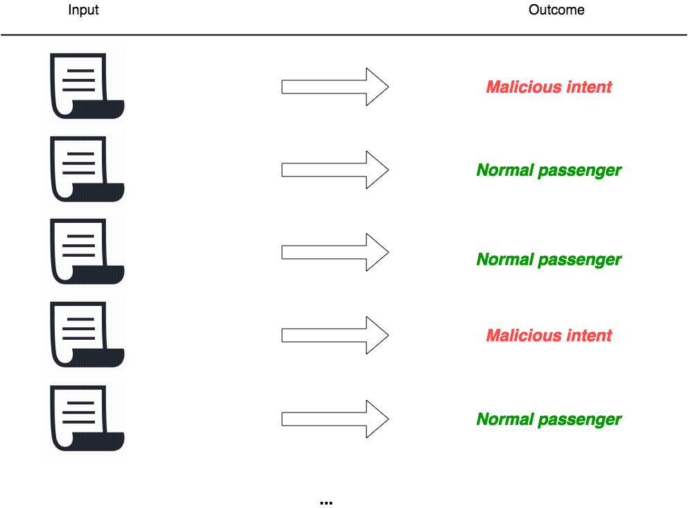
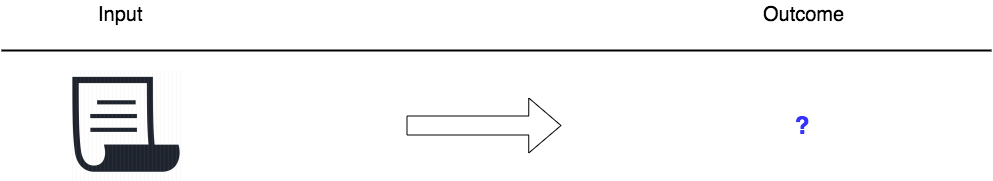
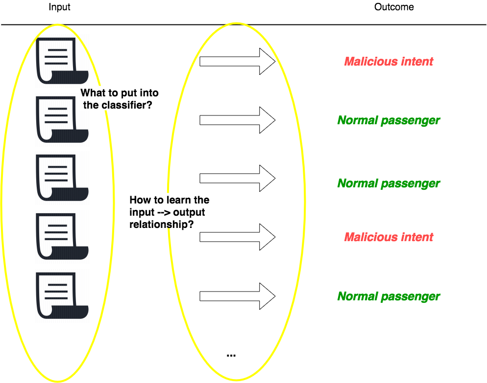
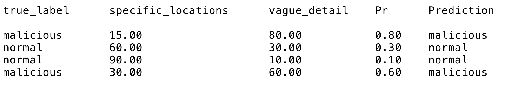
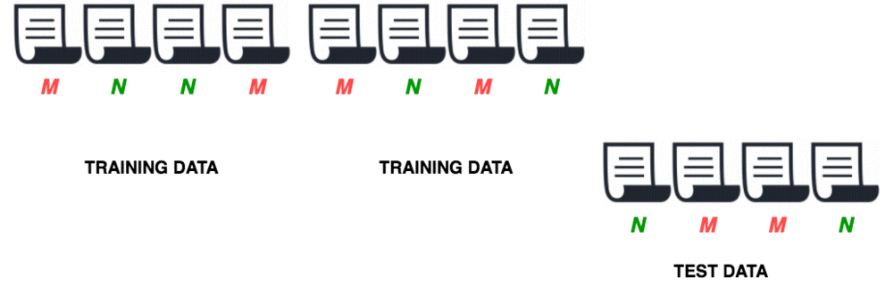

## Terrorism prevention with predictive modeling in R </br> Bennett Kleinberg University of Amsterdam [bkleinberg.net](http://bkleinberg.net/)
## Our approach - Text-based information on intended activities - Estimate the veracity/ambiguity of statements - Use prediction in security process at the airport </br> </br> **Today**: predictive modeling
### Predictive modeling Core task: Predict a target variable based on observations. <small>Synonym: Supervised machine learning</small>
### Three scenarios 1. We have a theory 2. No theory 3. Don't care about theory ... but ... We've got (massive) data with weak relationships. And we want to predict an outcome variable. <!-- **Scale** and **accuracy** -->
## Example - Written statements about planned activities - 80 truthful, 79 deceptive
| A | B | | --- | --- | | My friends and I will visit the gym at my workplace on Sunday. We meet every weekend to get some exercise in before our business meeting on Sunday evening. Kyle and Alex will be accompanying me. | My friend Ellen and I are packing for the weekend to board a bus to Philadelphia tomorrow morning, for my niece April's wedding. |
### Core idea 1. Let an algorithm learn the relationship between your predictors and the outcome. </br> </br> 2. Use the algorithm to predict future outcomes. </br> </br> **EXAMPLE**

<!-- ### Aim: predict outcome for new data -->  ### Scale and accuracy
<!-- ### Aim: predict outcome for new data -->  <!-- ### Scale and accuracy -->
### Teaching the algorithm </br> | Classification | Training data | Testing data | Outcome | | --- | --- | --- | --- | | Simple | M / N | M / N | M / N | | Multi-class | M / N / D | M / N / D | M / N / D | | One-class | N | M / N | M / N |
### Outcome flexibility - Probabilities behind classification - Risk-based adjustments **P(malicious|content of statement)**  Threshold: 0.50
### Training the algorithm <!-- - you got lucky with the train/test split --> <!-- - not representative of the data --> Cross-validation needed: 
### Stepwise example Step 1: split data <pre><code data-trim data-noescape> library(caret) training_indices = createDataPartition(y = data$true_label, p = .8) training_data = data[training_indices, ] test_data = data[- training_indices, ] </code></pre>
### Stepwise example Step 2: set controls <pre><code data-trim data-noescape> my_controls = trainControl(method="repeatedcv" , number=3 , repeats=10 , classProbs = T # … ) </code></pre>
### Stepwise example Step 3: train classifier <pre><code data-trim data-noescape> my_classifier = train(true_label ~ . , data = training_data , method = "svmLinear" , trControl = controls # … ) </code></pre>
### Stepwise example Step 4: Test the trained classifier <pre><code data-trim data-noescape> predicted_label = predict(my_classifier, test_data) caret::confusionMatrix(predicted_label, test_data$true_label) </code></pre> | | predicted: malicious | predicted: normal | | --- | --- | --- | | **true label: malicious** | 70 (true pos.) | 30 (false neg.) | | **true label: normal** | 10 (false pos.) | 90 (true neg.) |
### When to use predictive modeling? 1. You want to predict some outcome 2. You've got annotated data
### What does it offer? - find relationships in data - optimise predictions - tell you what's useful and what not - lets the data speak
**Explanatory vs. predictive modeling**
### Why use R? - _caret_ package! - _e1071_ package! - maximum of control for the analyst - 150+ classifiers - easy to scale - sheds light into the "black box"
## Why use R? - large community - reproducibility - flexibility - open source!
## Crime applications <!-- - terrorism prevention: P(threat|background data) --> - burglary prediction: P(burglary|history) - threat assessment: P(actual risk|threat content)
END ------------ Link: [A visual intro to ML](http://www.r2d3.us/visual-intro-to-machine-learning-part-1/) Book: [Applied Predictive Modelling](http://appliedpredictivemodeling.com/) ----------- </br> <small>made with <a href="https://github.com/hakimel/reveal.j">[reveal.js]</a></small>